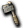
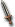

原野
盧亞斯森
米魯里斯森
斯歐米森
魔界村森
魯克西翁森
艾德安德周邊
卡雷瓦拉森
伊卡洛斯周邊
萊比亞周邊
【斯歐米森】１｜２｜３｜４｜５｜６｜７｜８
※各怪物的編輯請由標題的鉛筆圖示進行。掉落物品的編輯也可以從掉落物品欄的
出現怪物
摩斯戰士
［波特］
波恩傑奇
| 摩斯 | Lv | AC | MC | AAR | SAR | 掉落物品 |
| HP:80 | 5 | 100 | 80 | 20 | -10 | 付與木刀、  石斧、付與石斧、付與棍棒、付與木匕首、付與木杖、女戰士服、斯尼卡短衫、付與斯尼卡短衫、付與助祭之袍、付與助祭長袍、[1]摩斯變身捲軸、摩斯皮、拼圖片1-1 |
| 經驗值 | 名聲值 | 金錢 | 攻擊屬性 | 防禦屬性 | ||
| 50 | 0 | 20 | 無 | 風 | ||
| STR | DEX | INT | WIS | CON | ||
| 3 | 3 | 3 | 3 | 3 |
備註
摩斯戰士
| 摩斯戰士 | Lv | AC | MC | AAR | SAR | 掉落物品 |
| HP:176 | 10 | 80 | 40 | 20 | -10 | 付與神佑戰士服、摩斯皮 |
| 經驗值 | 名聲值 | 金錢 | 攻擊屬性 | 防禦屬性 | ||
| 100 | 0 | 35 | 無 | 風 | ||
| STR | DEX | INT | WIS | CON | ||
| 3 | 3 | 3 | 3 | 3 |
備註
| 波特 | Lv | AC | MC | AAR | SAR | 掉落物品 |
| HP:80 | 5 | 80 | 100 | 20 | -10 |  土耳其石、付與戰士服、付與女戰士服、女戰士服、 土耳其石、付與戰士服、付與女戰士服、女戰士服、 助祭之袍、付與女學徒之袍、付與學徒之袍、付與學徒之袍、付與斯尼卡短衫、斯尼卡短衫、付與斯尼卡衫、克雷斯修特、付與棍棒、付與布羅寶珠、付與泥土寶珠、泥土寶珠、付與木匕首、付與木刀、木刀、付與木杖、拼圖片1-2、 助祭之袍、付與女學徒之袍、付與學徒之袍、付與學徒之袍、付與斯尼卡短衫、斯尼卡短衫、付與斯尼卡衫、克雷斯修特、付與棍棒、付與布羅寶珠、付與泥土寶珠、泥土寶珠、付與木匕首、付與木刀、木刀、付與木杖、拼圖片1-2、 [2]波特變身捲軸 [2]波特變身捲軸 |
| 經驗值 | 名聲值 | 金錢 | 攻擊屬性 | 防禦屬性 | ||
| 50 | 0 | 20 | 水 | 水 | ||
| STR | DEX | INT | WIS | CON | ||
| 3 | 3 | 3 | 3 | 3 |
備註
［波特］
| ［波特］ | Lv | AC | MC | AAR | SAR | 掉落物品 |
| HP:240 | 5 | 127 | 90 | 20 | -10 | 付與戰士服、付與女戰士服、付與女學徒之袍、木匕首、土耳其石 |
| 經驗值 | 名聲值 | 金錢 | 攻擊屬性 | 防禦屬性 | ||
| 150 | 0 | 20 | 水 | 水 | ||
| STR | DEX | INT | WIS | CON | ||
| 3 | 3 | 3 | 3 | 3 |
備註
波恩傑奇
| 波恩傑奇 | Lv | AC | MC | AAR | SAR | 掉落物品 |
| HP:176 | 10 | 80 | 40 | 20 | -10 | [9]波恩傑奇變身捲軸、自我治癒（魔)、火焰箭、  銅劍、付與闊斧、匕首、未鑑定卡奇巴澤爾、未鑑定零星之杖(雙手)、木刀、泥土寶珠、魯奎德寶珠、付與克雷斯強者、拼圖片3-8 |
| 經驗值 | 名聲值 | 金錢 | 攻擊屬性 | 防禦屬性 | ||
| 100 | 0 | 35 | 水 | 水 | ||
| STR | DEX | INT | WIS | CON | ||
| 3 | 3 | 3 | 3 | 3 |
備註
| 棕毛地鼠 | Lv | AC | MC | AAR | SAR | 掉落物品 |
| HP:80 | 5 | 100 | 80 | 20 | -10 | 付與木刀、付與石斧、付與木杖、木匕首、付與泥土寶珠、 合金耳環、付與布羅寶珠、 合金耳環、付與布羅寶珠、 戰士服、付與學徒之袍、付與女學徒之袍、拼圖片1-6、 戰士服、付與學徒之袍、付與女學徒之袍、拼圖片1-6、 突刺、[4]棕毛地鼠變身捲軸 突刺、[4]棕毛地鼠變身捲軸 |
| 經驗值 | 名聲值 | 金錢 | 攻擊屬性 | 防禦屬性 | ||
| 50 | 0 | 20 | 無 | 無 | ||
| STR | DEX | INT | WIS | CON | ||
| 3 | 3 | 3 | 3 | 3 |
備註
| 比比白猴 | Lv | AC | MC | AAR | SAR | 掉落物品 |
| HP:176 | 10 | 80 | 40 | 20 | -10 | [5]比比猴變身捲軸、拼圖片2-5 |
| 經驗值 | 名聲值 | 金錢 | 攻擊屬性 | 防禦屬性 | ||
| 100 | 0 | 35 | 無 | 無 | ||
| STR | DEX | INT | WIS | CON | ||
| 3 | 3 | 3 | 3 | 3 |
備註
編輯寶箱（深茶）
 寶箱（深褐） 寶箱（深褐） | Lv | AC | MC | AAR | SAR |
| HP:454 | 1 | 58 | 40 | -60 | -100 |
| 經驗值 | 名聲值 | 金錢 | 攻擊屬性 | 防禦屬性 | |
| 1 | 100 | 15 | 無 | 無 | |
| STR | DEX | INT | WIS | CON | |
| 3 | 3 | 200 | 200 | 3 |
備註
掉落物品
混合藥水、古代捲軸、祝福捲軸、詛咒捲軸、賢者之葉、迪斯眼珠、土耳其石、摩斯皮、霍羅帕、魔法之花、生命之泉、哥布林頸肉、哥布林肉、海盜要塞入場券、海市蜃樓地圖、回憶之石、科馬利克、古老的短劍、強韌木刀、生鏽銅劍、青銅劍、未鑑定銅劍、卡奇巴澤爾、凱爾斧、米可斧、特隆拳套、零星之杖、巫師魔石、各職Lv1光服（戰・修・盜・聖・魔）、各職Lv11光服（戰・修・盜・聖・魔）、未鑑定魔法塔爾加、雷姆帕特盾、火之束帶、水之束帶、地之束帶、風之束帶、機械束帶、羅達束帶、尚護膝、達格護膝、鎖戒、格雷戒指、微風戒指、掉落戒指、尼爾護符、阿斯護符、水之護符